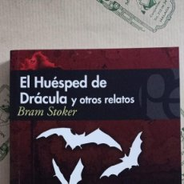

La obra del autor irlandés Bram Stoker (1847-1912) está llena de novelas y relatos cortos que exploran temáticas muy variadas, sin embargo no se puede negar su predilección por el horror gótico y las aventuras en lugares exóticos. Por algo su obra más importante y celebrada es Drácula, que se beneficia plenamente de esos gustos del autor.
El huésped o el invitado de Drácula es un cuento de terror publicado en 1941, en una colección de nueve cuentos titulada El invitado de Drácula y otras historias de terror.
Un joven inglés, posiblemente Jonathan Harker, viaja a Transilvania por trabajo y hace una parada en Múnich durante la Noche de Walpurgis, asociada con lo sobrenatural. Ignorando las advertencias de su cochero Johann sobre los peligros, explora un pueblo misterioso. En el bosque, el ambiente se torna opresivo con una tormenta de nieve acercándose. Encuentra un cementerio y una tumba de la condesa Dolingen de Gratz, con una inscripción que sugiere vampirismo: "muerta, pero no muerta".
El protagonista es atacado por una figura sobrenatural de una tumba, pero un lobo gigante lo protege, calentándolo en una tormenta de nieve. Medio inconsciente, es rescatado por soldados alertados por un telegrama del conde Drácula, quien desde Transilvania vela por su "huésped". Desconcertado, el joven reflexiona sobre lo sobrenatural y se prepara para continuar hacia el castillo de Drácula, dejando un aura de misterio.
"Es un historia de terror que narra al personaje mas historico del terror, pero que ademas nos da a entender su forma de ser y su historia. Algo que puede cambiar segun cada historia o adaptacion."
- Allan Gálvez
"este libro es uno que tiene una muy buena trama y batante interesante, este tiene un estilo gotico que se mezcla con el suspenso y el terror"
- brayan perez
"[Cita de Reseña 3]"
- [Autor de la Reseña 3]
Los capítulos 1 y 2 de *El huésped de Drácula*, de Bram Stoker, crean una atmósfera gótica que está llena de misterio y un toque de lo sobrenatural. El joven protagonista, que probablemente es Jonathan Harker, combina una curiosidad racional con un poco de imprudencia al ignorar las advertencias de los habitantes locales sobre la Noche de Walpurgis y se aventura en un pueblo que parece abandonado. Cuando encuentra una tumba que sugiere la presencia de vampiros y aparece un lobo que parece protegerlo, además del telegrama enigmático del conde Drácula, el ambiente se vuelve bastante inquietante. Esto prepara al lector para enfrentarse a los horrores que vienen en la historia de *Drácula*. En estos capítulos, vemos el choque entre una visión moderna del mundo y las fuerzas oscuras del folclore, preparando el camino para un viaje hacia lo desconocido.
el Libro el huesped de dracula y otros relatos de bram stoker lo puedes encontra en es boton que te redigira a la tienda de amazon en donde podras comprar este